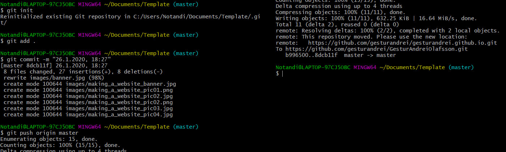
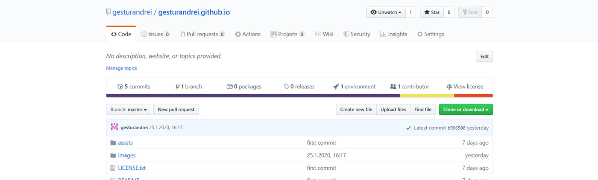
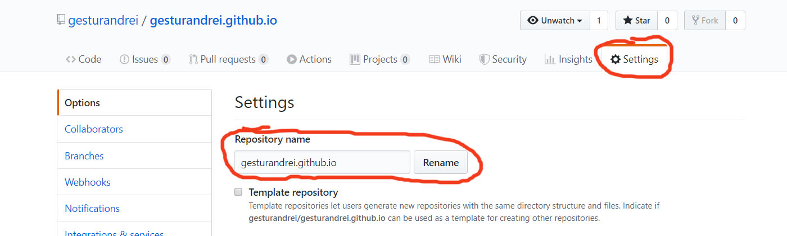

Making a website
Below you will find a detailed description of the project process.
In this project the objective was to make a functional website that anyone could access throug a web browser.
The website had to be made with HTML5 and be a work of my own creation.
Because I had never worked with HTML5 before I started with finding a template for a website online.
I picked a template named Prologue from this website: https://html5up.net

For this project I downloaded Brackets, Git and set up an account at Github.com.
Brackets is a source code editor with a primary focus on web development. Created by Adobe Systems,
it is free and open-source software licensed under the MIT License, and is currently maintained on
GitHub by Adobe and other open-source developers. It is written in JavaScript, HTML and CSS. I used
Brackets to edit the html files for my website.
Git is a distributed version-control system for tracking changes in source code during software
development. It is designed for coordinating work among programmers, but it can be used to track
changes in any set of files. Its goals include speed, data integrity, and support for distributed,
non-linear workflows. I used Git to push changes I made to the website to my website repository at Github.com.
GitHub is a global company that provides hosting for software development version control using Git. It offers
all of the distributed version control and source code management functionality of Git as well as adding its
own features. I used Github to host my website because it is free and convinient.
Click the buttons below to go to the relevant websites to download Brackets, Git or set up a Github account.

After I had downloaded and installed the Brackets software, along with setting up Git on my computer and making a
new repository at Github, I could open upp the index.html file (from the template I downloaded) with Brackets and
start making changes.
Brackets alows you to view the website by clicking the lightning icon in the upper right corner.

When I was happy with the resault of the website I went into the work folder of my website, right clicked and then selected "Git bash here" from the drop down menu

A new git-window will then appear where I could commit and push the newest version of the website to my repository at Github.
The files get pushed to the repository at Github. It might take a few minutes for the website to update.
I finally changed the repository name to the exact link I want people to access my website through.
Below you can download the html file for the front page as it was 27.January.2020 in text form.